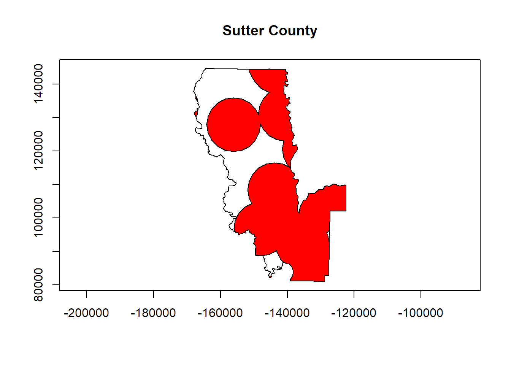

Download the GitHub repo.
Create a new R script in RStudio (File → New File → R Script).
Copy the questions below (all of which begin with the # character so RStudio will interpret them as a comment) into your script. Under each question, write R code. Run each line of R code as you enter it (press the Run button or ctrl+enter) to make sure it works.
Remember to save your script periodically to avoid losing work if RStudio crashes.
If you get stuck, click on the 'hint' link, or the question number to see the answer. Click again to hide.
If you have any questions or problems, please feel free to email the instructor.
########################################
### Import Projected CA Counties and Cell Towers
# 1. (If needed) import the projected county boundaries and cell tower locations you
# saved in an earlier exercise.
load("data/ex06_cell_towers_prj.RData")
load("data/ex06_counties_bnd.RData")########################################
### Country Centroids and Delaunay Triangulation
# 2. Compute and plot the centroids of the counties.
library(rgeos)## rgeos version: 0.3-26, (SVN revision 560)
## GEOS runtime version: 3.6.1-CAPI-1.10.1 r0
## Linking to sp version: 1.2-6
## Polygon checking: TRUEca_cnty_ctr <- gCentroid(ca_cnty_prj, byid=TRUE)
plot(ca_cnty_prj, axes=TRUE, asp=1)
plot(ca_cnty_ctr, col="tan3", pch=17, cex=1.2, add=TRUE)# 3. Create and plot a Delaunay Triangulation of the county centroids.
countyctr_tri <- gDelaunayTriangulation(ca_cnty_ctr)
#plot(sfpot_prj, col="red", pch=16, cex=2, axes=TRUE)
plot(ca_cnty_prj, border="grey60", axes=TRUE, asp=1)
plot(countyctr_tri, add=TRUE, border="springgreen4", lwd=1.2)########################################
### Buffers and Intersections
# 4. Compute a 5 mile buffer around each tower.
meters_per_mile <- 1609.34
cell_towers_buf <- gBuffer(cell_towers_spdf_prj, byid=TRUE, width=5 * meters_per_mile)
plot(cell_towers_buf)# 5. Focusing on one county, find the area within 5 miles of a cell tower. What
# percentage of the county is this?
idx <- sample(1:nrow(ca_cnty_prj), size=1)
some_county_bnd <- ca_cnty_prj[idx,]
cnty_celltowbuff <- gIntersection(some_county_bnd, cell_towers_buf)
plot(some_county_bnd, axes=TRUE, asp=TRUE, main=ca_cnty_prj@data[idx, "CountyNAME"])
plot(cnty_celltowbuff, add=TRUE, col="red", pch=16, cex=0.7)
gArea(cnty_celltowbuff)## [1] 1040134423gArea(cnty_celltowbuff) / gArea(some_county_bnd)## [1] 0.288786829% of the county is within 5 miles of cell tower.